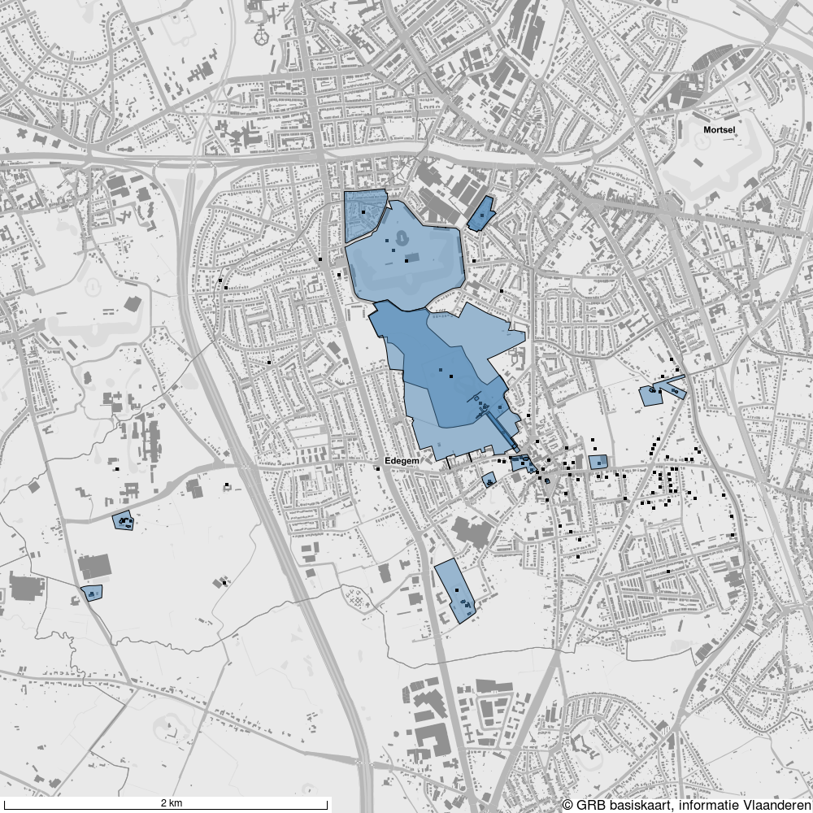
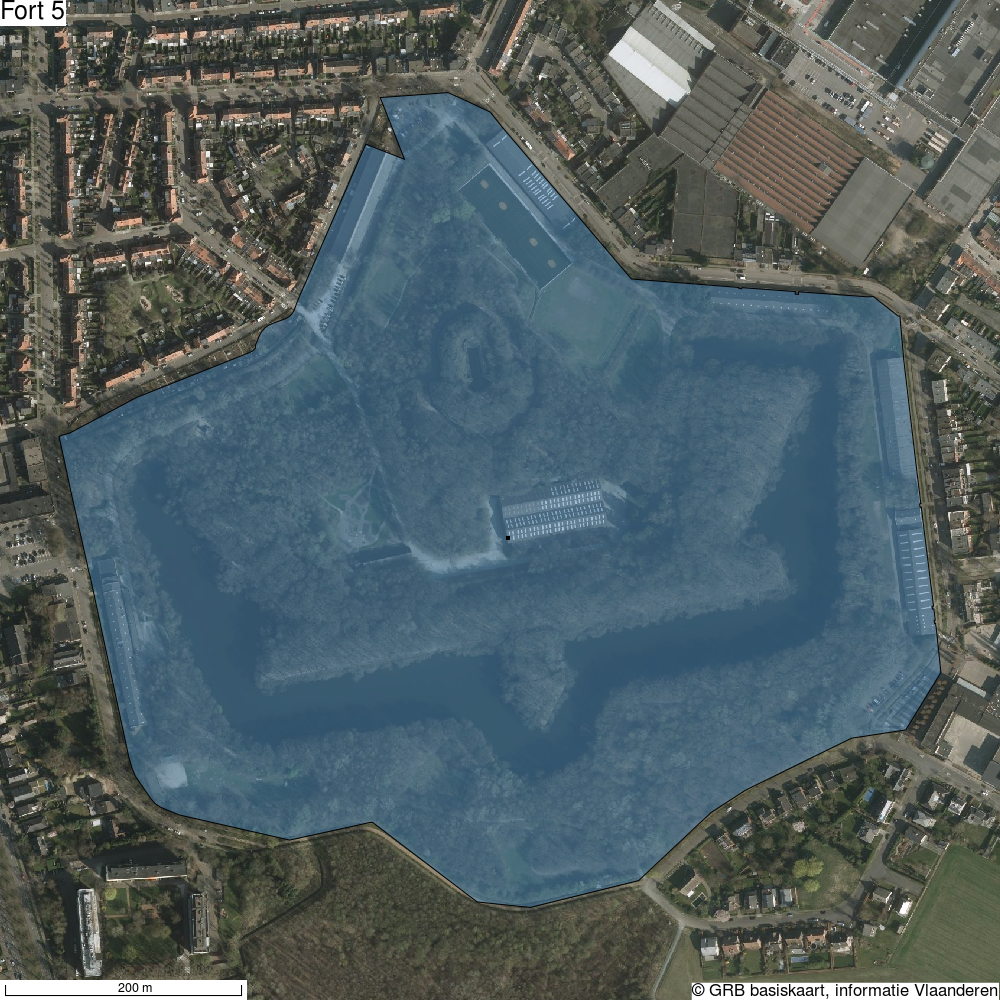
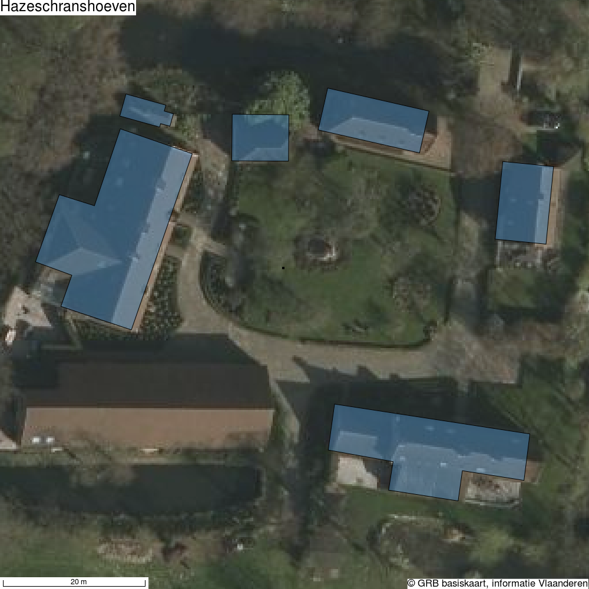
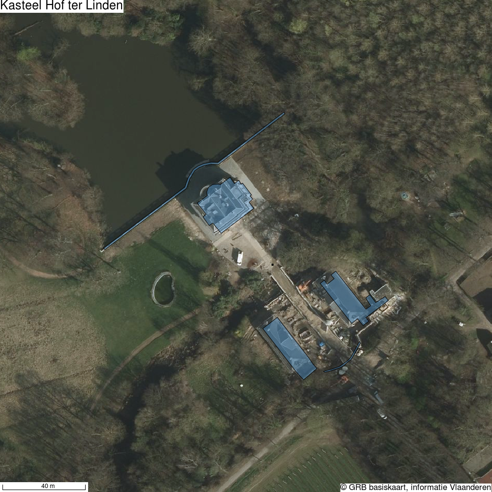
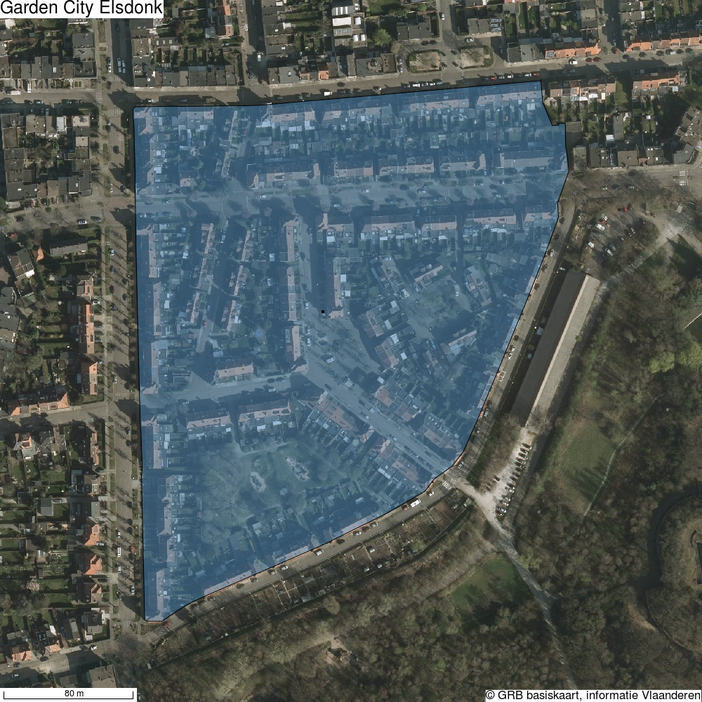

Via het Geoportaal (Waar ligt ons Erfgoed?) kan een mens makkelijk zien waar ons erfgoed ligt. Via de service Geozoekdiensten (Geozoekdiensten. Wat ligt er hier?) kan een machine makkelijk opvragen welk erfgoed in een bepaald gebied ligt. Maar wat doe je dan met die informatie? Vanaf nu kan je er in elk geval makkelijker zelf mee aan de slag. Namelijk: Hoe kan je zelf kaartjes maken van het gevonden erfgoed?
Om deze kaartjes te genereren kan gebruik gemaakt worden van de statische kaartgenerator module ontwikkeld door en voor het agentschap Onroerend Erfgoed in samenwerking met externe partners.
Het doel van deze statische kaartgenerator is het genereren van statische kaarten die zijn samengesteld uit:
verschillende geografische formaten zoals GeoJSON
een achtergrondlaag zoals WMS
lay-out-overlays zoals tekst en schaal.
Op basis van een configuratiebestand maakt de kaartgenerator van alle afzonderlijke lagen een afbeelding. De afbeelding bevat een schaalbalk. De afbeelding kan worden teruggegeven als een foto of een base64 formaat.
De statische kaartgenerator kan zowel als een Python module en of als een REST service gebruikt worden. Daardoor kan je de module makkelijk in je eigen project inbouwen. Als je zelf met Python werkt, gebruik je gewoon de bibliotheek. Als je niet met Python werkt, kan je de kaartgenerator installeren als een aparte toepassing op een server en deze dan als service aanroepen.
De inventaris is een mooi werkinstrument voor wie ons erfgoed wil leren kennen. Maar soms is het handig om een lokale kopie van informatie te hebben. Zodat je de baan op kunt zonder internetverbinding of zelfs zonder computer. Geen nood, door een paar van onze diensten te combineren maak je zo je eigen erfgoedatlas.
In volgend voorbeeld zal de gemeente Edegem gebruikt worden. Dit allemaal in een kort scriptje hieronder voorgesteld. Eerst worden alle erfgoedobjecten en aanduidingsobjecten opgevraagd binnen de gemeente via de geozoekdiensten. Er wordt een basis configuratie opgesteld om de afbeelding aan te maken: achtergrondlaag, tekst, breedte en hoogte afbeelding. De geometrie van elk object wordt als een afzonderlijke laag toegevoegd aan de configuratie. Ten slotte wordt de configuratie meegegeven aan de statische kaartgenerator die op zijn beurt de afbeelding zal teruggeven.
De afbakening van Edegem halen we hier uit een GeoJson bestand dat we voordien hebben aangemaakt op basis van de gegevens die Informatie Vlaanderen ter beschikking stelt.
# -*- coding: utf-8 -*-
import os
import json
import requests
from static_map_generator.generator import Generator
with open(os.path.join(os.path.dirname(__file__), 'Edegem.json'), 'rb') as f:
edegem_geojson = json.loads(f.read())
heritage_objects = requests.post(
'https://geo.onroerenderfgoed.be/zoekdiensten/afbakeningen',
json={
"categorie": ["erfgoedobjecten", "aanduidingsobjecten"],
"geometrie": edegem_geojson
},
headers={"Content-type": "application/json", "Accept": "application/json"}
).json()
municipality_body = {
"params": {
"width": 1000,
"height": 1000
},
"layers": [
{
"type": "text",
"text": "© GRB basiskaart, informatie Vlaanderen",
"gravity": "south_east",
"font_size": 4
},
{
"type": "wms",
"url": "http://geoservices.informatievlaanderen.be/raadpleegdiensten/GRB-basiskaart-grijs/wms?",
"layers": "GRB_BSK_GRIJS"
}
]
}
# Make a map of the municipality to show all the heritage objects
for obj in heritage_objects:
municipality_body['layers'].append(
{
"type": "geojson",
"geojson": obj["geometrie"]
}
)
with open(os.path.join(os.path.dirname(__file__), 'maps/Edegem/Edegem.png'), 'wb') as f:
f.write(Generator.generate_stream(municipality_body))
Zo bekom je een mooie kaart van al het erfgoed dat wij kennen in de gemeente Edegem.
Het is ook mogelijk om voor elk erfgoedobject afzonderlijk een kaartje te genereren. Dit wordt voorgesteld in volgend script. Bij wijze van voorbeeld, wordt er hier een andere andere achtergrondlaag gebruikt en wordt telkens de naam van het erfgoedobject bij op de kaart geplaatst.
# -*- coding: utf-8 -*-
import os
import json
import requests
from copy import deepcopy
from static_map_generator.generator import Generator
with open(os.path.join(os.path.dirname(__file__), 'Edegem.json'), 'rb') as f:
edegem_geojson = json.loads(f.read())
heritage_objects = requests.post(
'https://geo.onroerenderfgoed.be/zoekdiensten/afbakeningen',
json={
"categorie": ["erfgoedobjecten", "aanduidingsobjecten"],
"geometrie": edegem_geojson
},
headers={"Content-type": "application/json", "Accept": "application/json"}
).json()
# Make a map of each heritage object in the municipality
# As an example only show the first
body = {
"params": {
"width": 1000,
"height": 1000
},
"layers": [
{
"type": "text",
"text": "© GRB basiskaart, informatie Vlaanderen",
"gravity": "south_east",
"font_size": 4
},
{
"type": "wms",
"url": "http://geoservices.informatievlaanderen.be/raadpleegdiensten/omwrgbmrvl/wms?",
"layers": "Ortho"
}
]
}
for obj in heritage_objects:
if "Polygon" in obj["geometrie"]["type"]:
obj_body = deepcopy(body)
obj_body['layers'].append(
{
"type": "geojson",
"geojson": obj["geometrie"]
}
)
obj_body['layers'].append(
{
"type": "text",
"text": obj["naam"],
"gravity": "north_west",
"font_size": 6
}
)
filename = obj["naam"].replace(" ", "_").strip() + '.png'
with open(os.path.join(os.path.dirname(__file__), 'maps/Edegem', filename), 'wb') as f:
f.write(Generator.generate_stream(obj_body))
Zoals je hieronder kunt zien beschikken we nu over een kaartje per object uit de inventaris. Het staat je nog vrij om die allemaal af te drukken of nog verder te verwerken. Niet vergeten dat zowel onze gegevens als de gegevens van Informatie Vlaanderen open data zijn en dus vrij ter jullie beschikking staan.
Wil je zelf aan de slag met de kaartgenerator, kijk dan naar de statische kaartgenerator op Github. Meer informatie over de kan je vinden in deze blog (Geozoekdiensten. Wat ligt er hier?) of op de levende API docs op https://geo.onroerenderfgoed.be/zoekdiensten/api_doc
Fort 5
Hazeschranshoeven
Kasteel Hof ter Linden
Garden City Elsdonk
